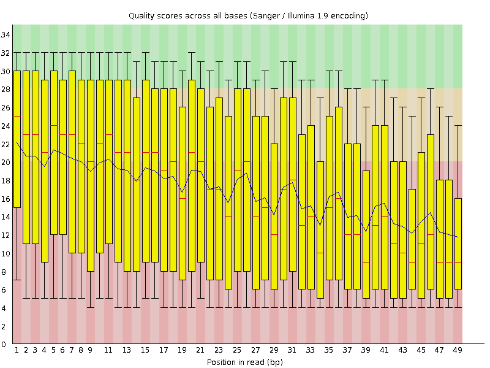
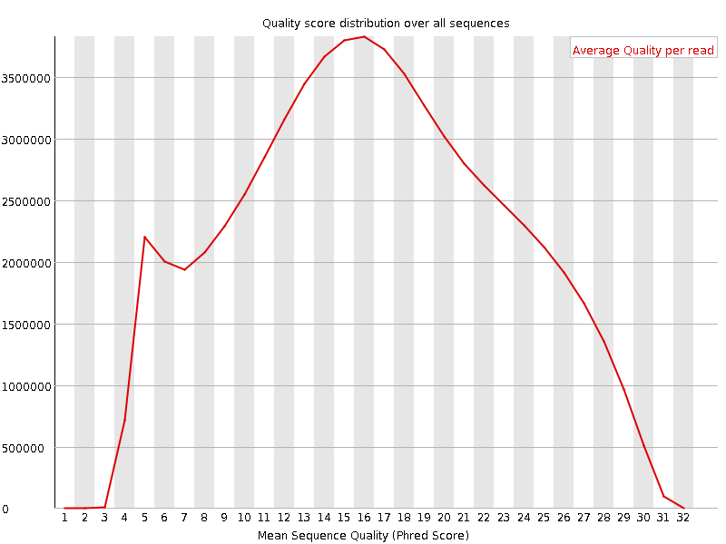
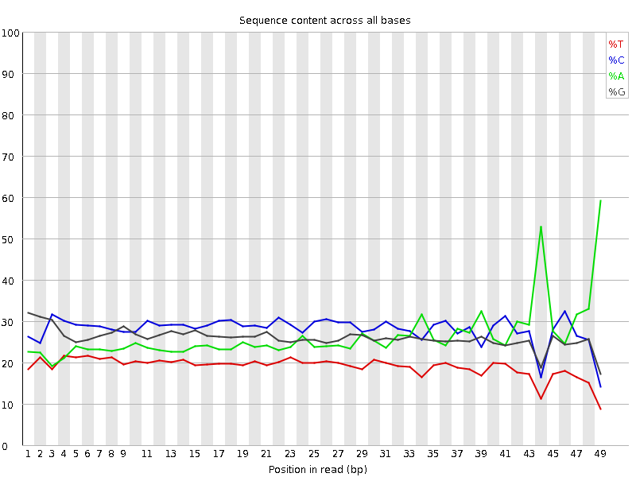
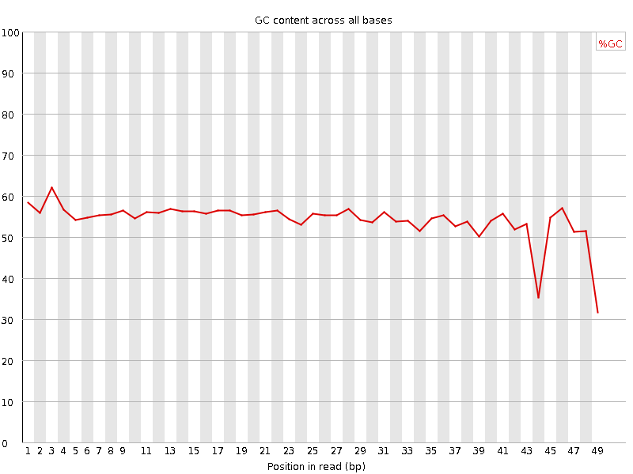
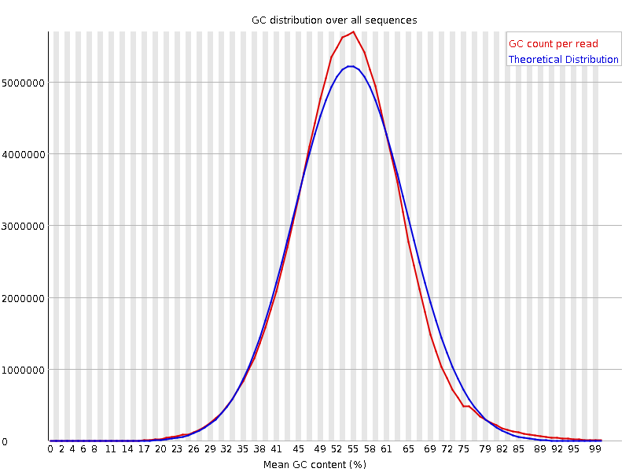
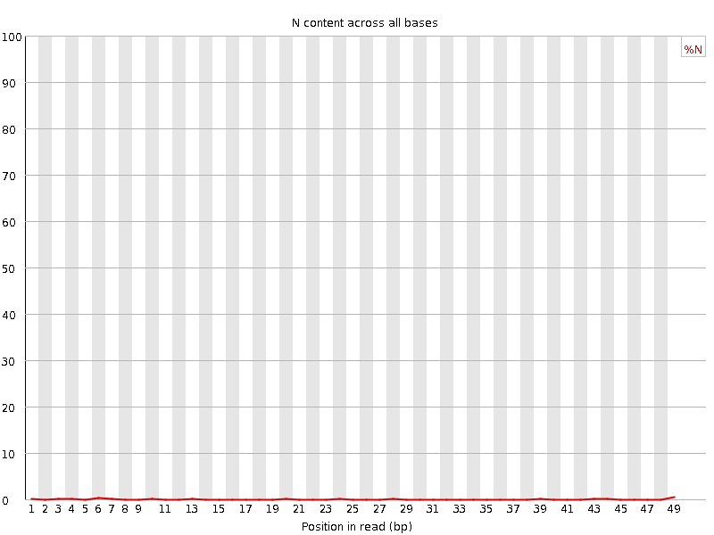
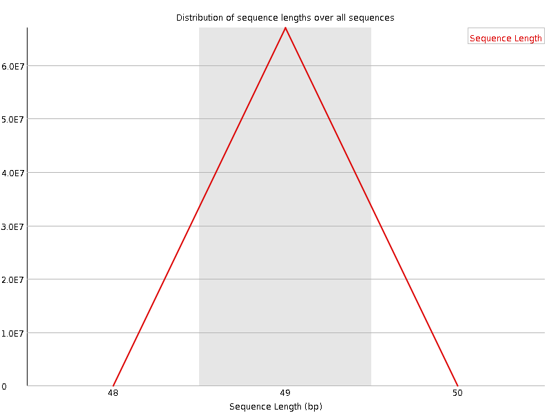
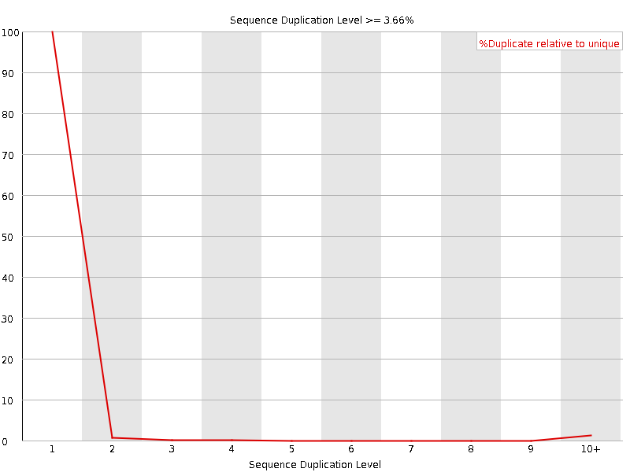
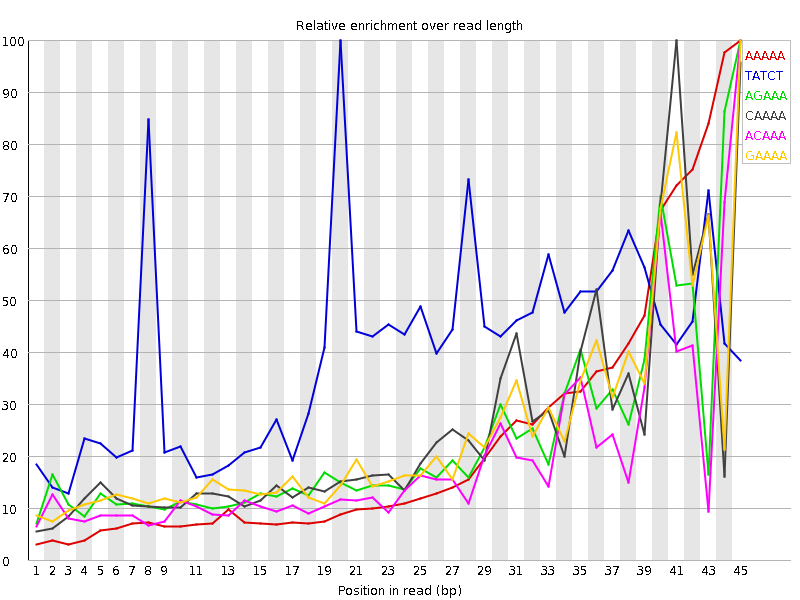

![[OK]](Icons/tick.png) Basic Statistics
Basic Statistics
| Measure | Value |
|---|---|
| Filename | Haliotis_crac_CCCEcombined.fastq |
| File type | Conventional base calls |
| Encoding | Sanger / Illumina 1.9 |
| Total Sequences | 67005815 |
| Filtered Sequences | 0 |
| Sequence length | 49 |
| %GC | 54 |
![[FAIL]](Icons/error.png) Per base sequence quality
Per base sequence quality

Per sequence quality scores

Per base sequence content

Per base GC content

Per sequence GC content

Per base N content

Sequence Length Distribution

Sequence Duplication Levels

Overrepresented sequences
No overrepresented sequences
Kmer Content

| Sequence | Count | Obs/Exp Overall | Obs/Exp Max | Max Obs/Exp Position |
|---|---|---|---|---|
| AAAAA | 9961600 | 2.5412612 | 10.605387 | 45 |
| TATCT | 3485380 | 2.1959631 | 5.4688 | 20 |
| AGAAA | 5542520 | 1.4365402 | 6.0914116 | 45 |
| CAAAA | 5877710 | 1.4079202 | 5.5470624 | 41 |
| ACAAA | 5829160 | 1.3962908 | 7.1045275 | 45 |
| GAAAA | 5370665 | 1.3919979 | 5.5908537 | 45 |
| AAACA | 5658365 | 1.3553792 | 6.1408134 | 43 |
| CCAAA | 5896155 | 1.326137 | 6.0245237 | 45 |
| ATAAA | 3749255 | 1.3202823 | 5.887668 | 45 |
| AAATA | 3682015 | 1.2966043 | 5.672522 | 43 |
| AACAA | 5409470 | 1.29576 | 6.7799363 | 44 |
| AAGAA | 4870760 | 1.26243 | 5.643374 | 44 |
| ACCAA | 5608260 | 1.261385 | 5.532016 | 44 |
| GGAAA | 4741630 | 1.2486151 | 5.038141 | 45 |
| AAAAC | 5194145 | 1.2441821 | 5.657172 | 42 |
| AATAA | 3530880 | 1.2433827 | 5.7483587 | 44 |
| GCAAA | 4492370 | 1.093291 | 5.0340624 | 45 |